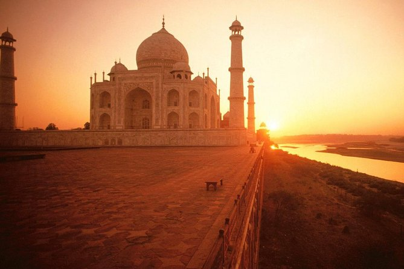
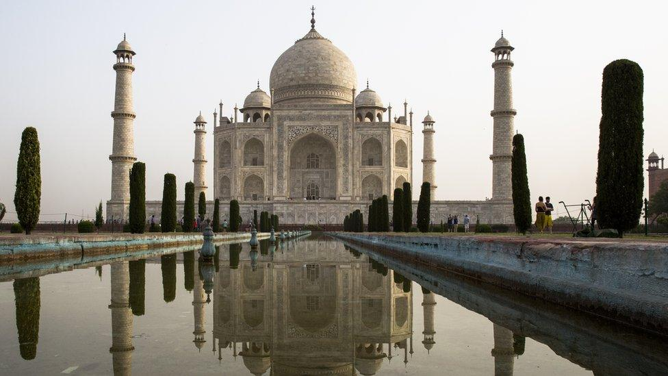
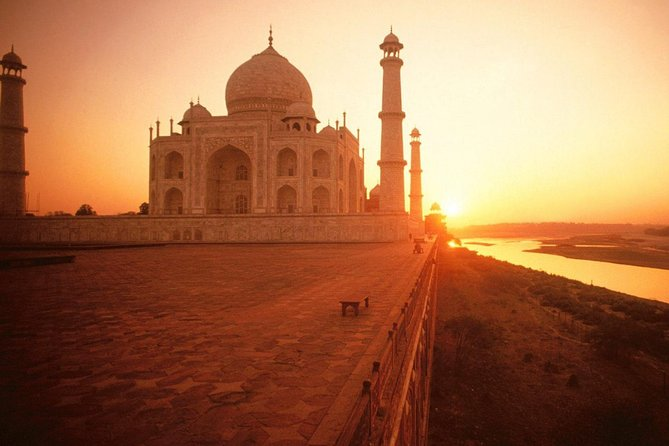
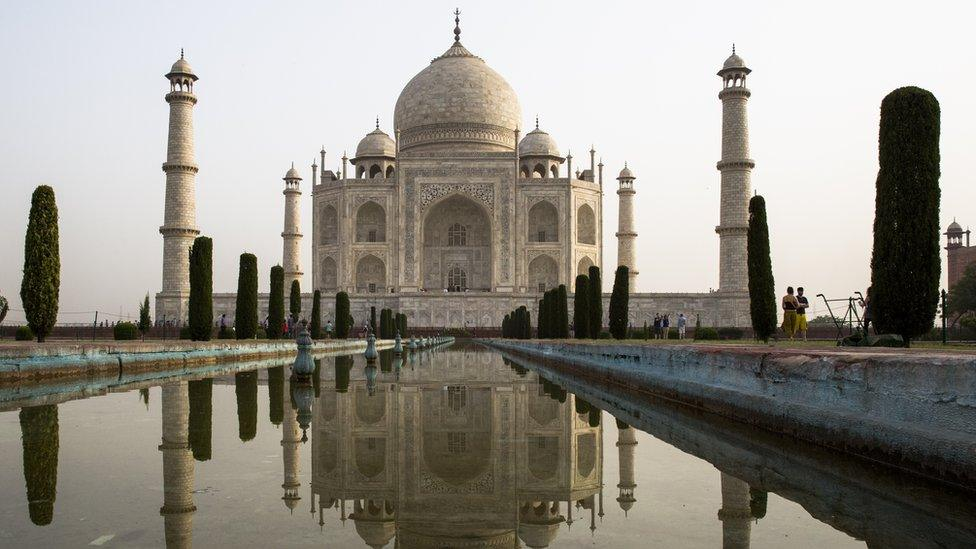

The Taj Mahal: A Symbol of Love
The Taj Mahal is one of the most famous landmarks in the world, known for its stunning white marble architecture and rich history. It was built by Emperor Shah Jahan in memory of his wife Mumtaz Mahal.
This UNESCO World Heritage site is a must-visit for those traveling to India, showcasing the grandeur of Mughal architecture.
Address: Dharmapuri, Forest Colony, Tajganj, Agra, Uttar Pradesh 282001, India
 


